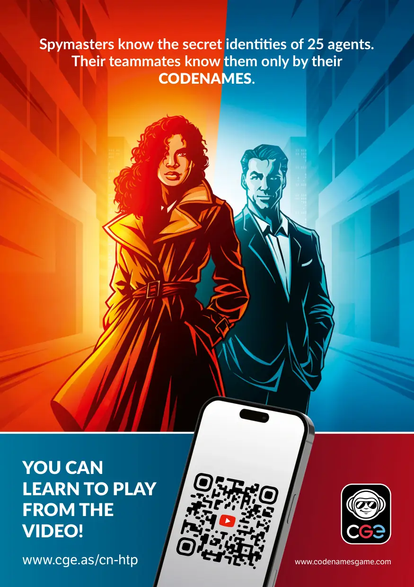
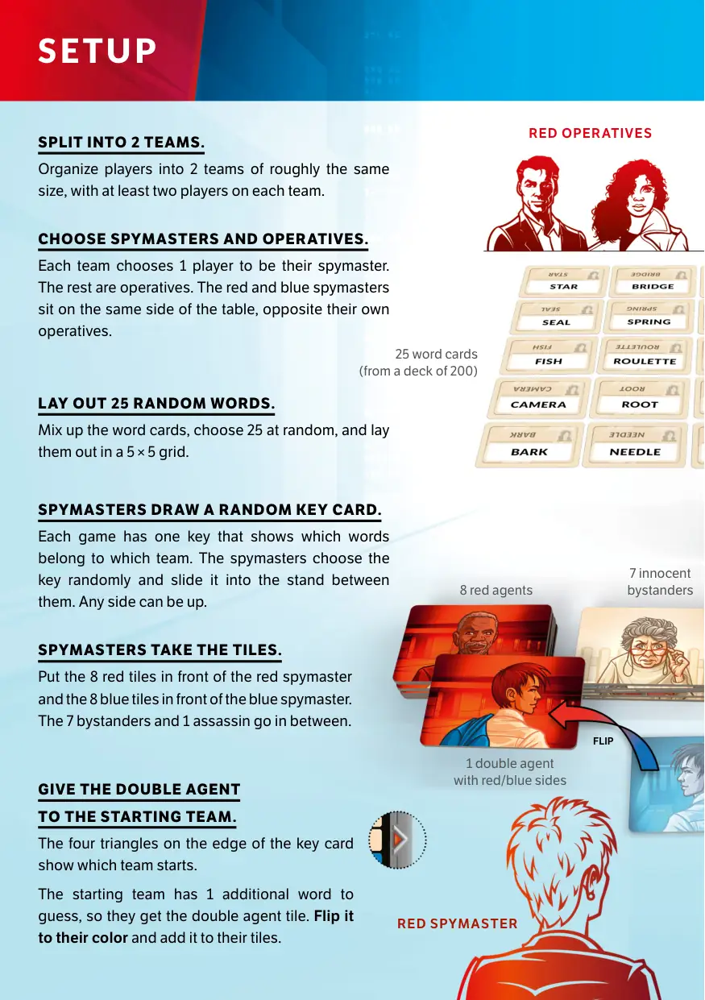
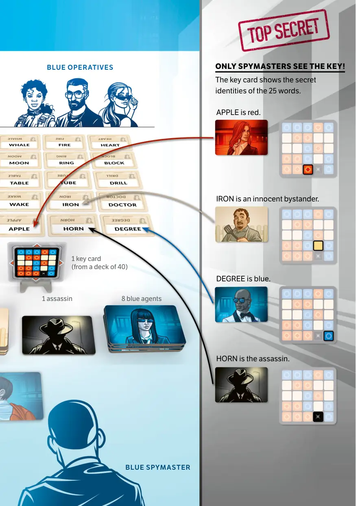
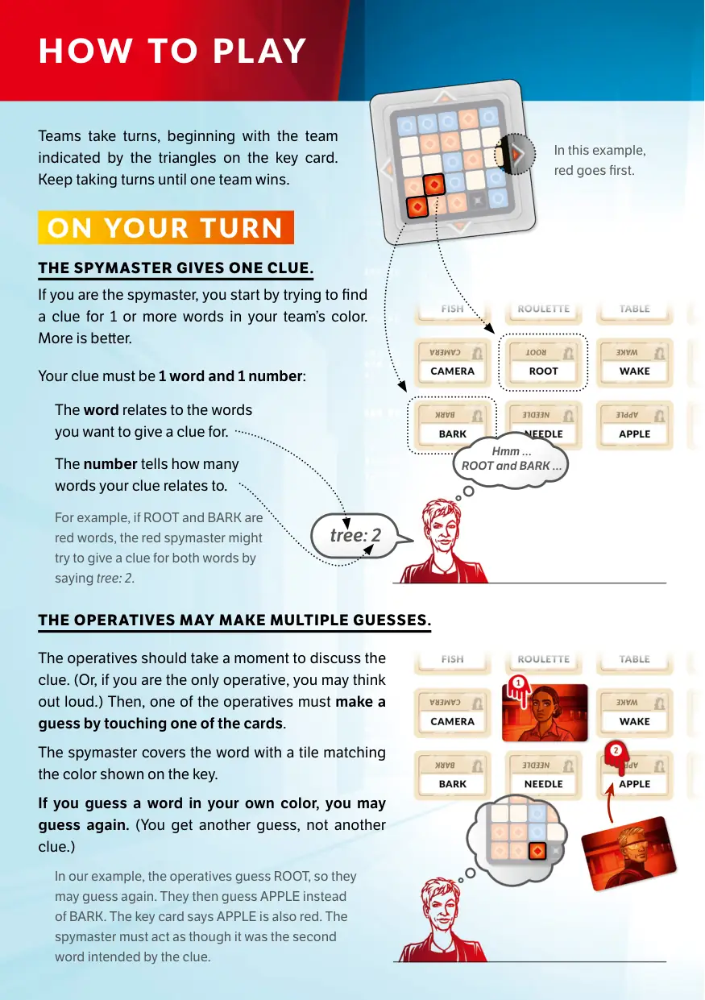
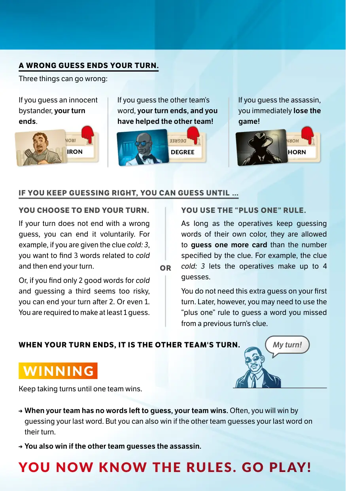
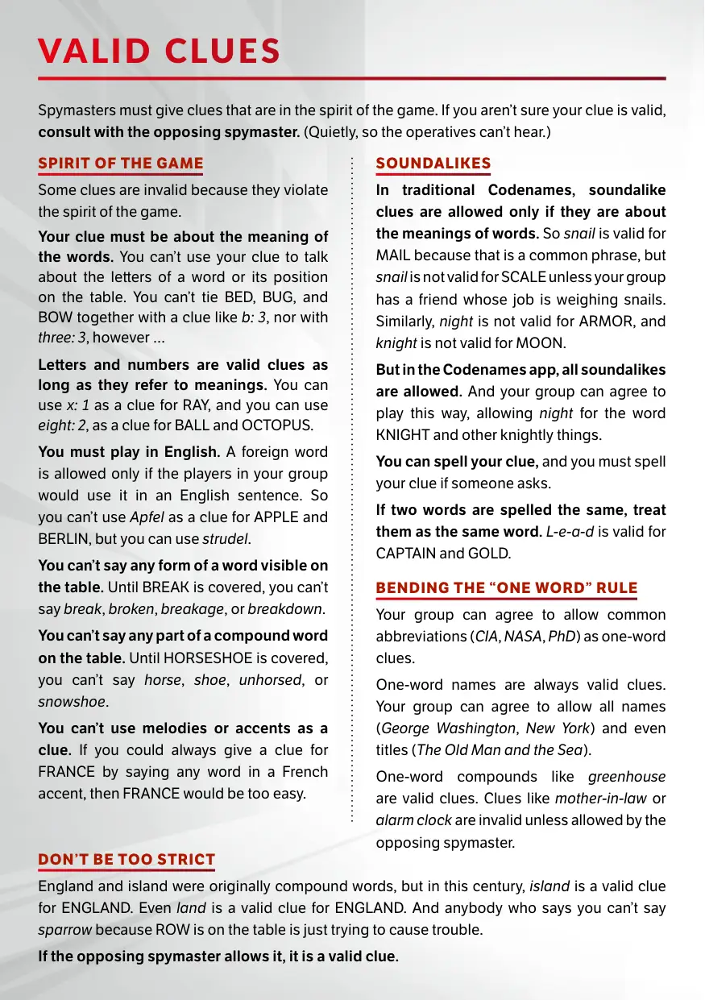
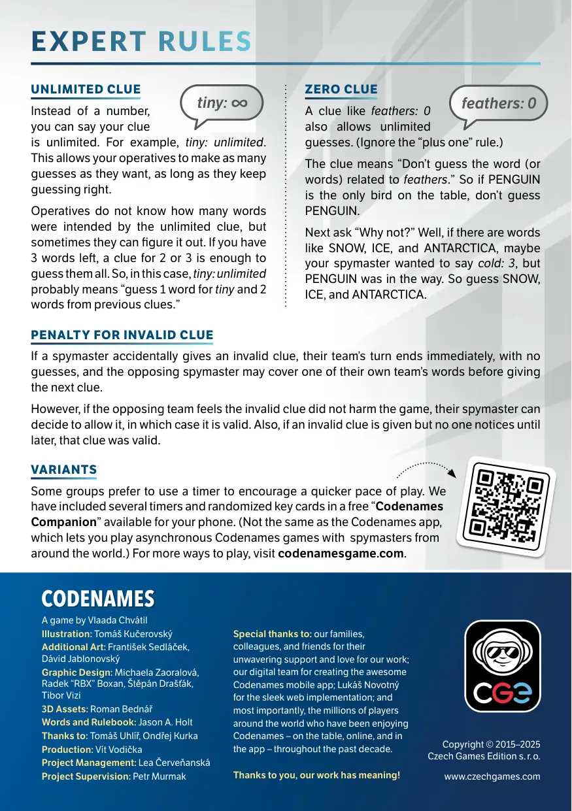
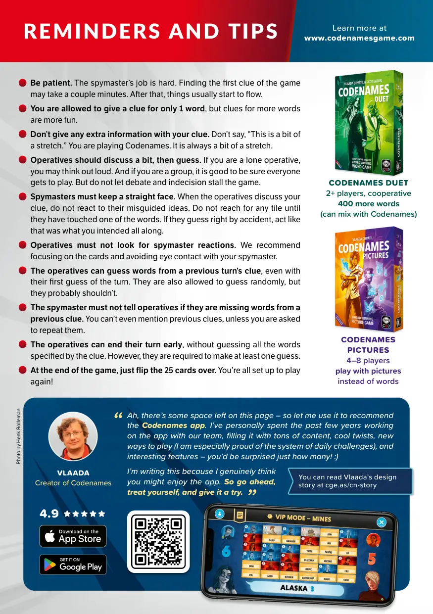

🕵️ 行动代号
Codenames · 设计：Vlaada Chvátil · Czech Games Edition (CGE) 出版 · 2–8+ 人 · 官方英文规则书全文翻译（8 页 · AI 辅助机翻）
本页收录《行动代号》（Codenames, 2015）的原版官方规则书全部 8 页（底本：Czech Games Edition 官方 filemanager 直链（规则 v3.0 英文版），CN%20rulebook%20EN%2030.pdf），逐页随图排列，点击任意图片即可放大查看；每页下方默认折叠了该页的 AI 辅助中文机翻对照，需要时可展开。规则内容归 Czech Games Edition (CGE) 及版权方所有，收录仅供个人学习查阅。
整理说明：机翻对照按本站术语口径对齐（牌库/手牌/回合/轮/板块/指示物等），PDF 图文混排页的语序可能与原书视觉顺序略有出入；规则细节请一律以页面上方原书页面为准。

📝 第 1 页 AI 机翻对照（点击展开）
间谍大师知道25名特工的秘密身份。
他们的队友只知道他们的
代号。
你可以
通过视频
学会游戏！
www.cge.as/cn-htp
www.codenamesgame.com

📝 第 2 页 AI 机翻对照（点击展开）
分成2个队伍。
将玩家分成2个规模大致相同的队伍，每队至少有两名玩家。
选择间谍大师和特工。
每队选择1名玩家作为他们的间谍大师。其余的是特工。红色和蓝色间谍大师坐在桌子同一侧，面对自己队伍的特工。
随机摆放25个词语。
打乱词语卡牌，随机选择25张，以5×5网格形式摆放。
间谍大师抽取随机密钥卡。
每局游戏有一张密钥卡，显示哪些词语属于哪个队伍。间谍大师随机选择密钥卡，将其插入他们之间的支架中。任意一面朝上均可。
间谍大师拿取指示物。
将8个红色指示物放在红色间谍大师面前，8个蓝色指示物放在蓝色间谍大师面前。7个平民旁观者和1个刺客放在中间。
将双重特工
交给起始队伍。
密钥卡边缘的四个三角形显示哪支队伍先开始。
起始队伍需要多猜1个词语，所以他们获得双重特工指示物。将其翻到他们的颜色并添加到他们的指示物中。
设置
翻转
红色间谍大师
红色特工
25张词语卡牌
（来自200张牌库）
8名红色特工
7名无辜平民旁观者
1名双重特工
带有红/蓝两面
<!--page:3>
只有间谍大师能看到密钥！
密钥卡显示25个词语的秘密身份。
DEGREE（程度）是蓝色。
APPLE（苹果）是红色。
HORN（号角）是刺客。
IRON（铁）是无辜平民旁观者。
Heart（心）是蓝色，
Tube（管）是红色，
Iron（铁）是无辜的，
你会死的。
蓝色间谍大师
蓝色特工
1张密钥卡
（来自40张牌库）
1名刺客
8名蓝色特工


📝 第 4 页 AI 机翻对照（点击展开）
队伍轮流进行，从钥匙卡上标有三角形的队伍开始。
继续轮流进行，直到有一个队伍获胜。
如何游戏
在你的回合
在我们的例子中，特工们猜测了 ROOT，所以他们可以再次猜测。然后他们猜测了 APPLE 而不是 BARK。钥匙卡显示 APPLE 也是红色的。间谍大师必须表现得好像这是线索中第二个想要表达的词。
这个词语与你想要给出线索的词语相关。
这个数字告诉你的线索与多少个词语相关。
间谍大师给出一个线索。
如果你是间谍大师，你首先要尝试为你的队伍颜色的 1 个或更多词语寻找线索。越多越好。
你的线索必须是 1 个词语和 1 个数字：
例如，如果 ROOT 和 BARK 是红色词语，红色间谍大师可能会尝试通过说 tree: 2 来为这两个词语给出线索。
在这个例子中，
红色队伍先行动。
特工们可以进行多次猜测。
特工们应该花点时间讨论线索。（或者，如果你是唯一的特工，你可以大声思考。）然后，一名特工必须通过触摸一张卡片来做出猜测。
间谍大师用与钥匙上所示颜色相匹配的板块盖住该词语。
如果你猜中了自己队伍颜色的词语，你可以再次猜测。（你得到另一次猜测，而不是另一个线索。）
嗯…
ROOT 和 BARK…
tree: 2

📝 第 5 页 AI 机翻对照（点击展开）
你选择结束你的回合。
如果你的回合不是以错误的猜测结束，你可以自愿结束它。例如，如果你得到的线索是 cold: 3，你想找到 3 个与 cold 相关的词，然后结束你的回合。
或者，如果你只找到了 2 个关于 cold 的好词，而猜测第三个似乎风险太大，你可以在猜了 2 个后结束你的回合。甚至猜 1 个后也可以。
你必须至少做出 1 次猜测。
你使用"加一"规则。
只要特工们继续猜测他们自己颜色的词，他们就被允许比线索指定的数量多猜一张牌。例如，线索 cold: 3 允许特工最多进行 4 次猜测。
你在第一回合不需要这个额外的猜测。然而，之后你可能需要使用"加一"规则来猜测你在前一回合线索中遗漏的词。
→ 当你的团队没有词可以猜测时，你的团队获胜。通常，你会通过猜测最后一个词来获胜。但如果对方团队在他们的回合中猜到了你的最后一个词，你也可以获胜。
→ 如果对方团队猜到了刺客，你也获胜。
你现在知道规则了。去玩吧！
如果你继续猜对，你可以猜到...
当你的回合结束时，就是另一队的回合。
轮流进行回合，直到有一队获胜。
或者
错误的猜测会结束你的回合。
可能出现三种错误情况：
获胜
我的回合！
如果你猜到了无辜的旁观者，你的回合结束。
如果你猜到了对方团队的词，你的回合结束，而且你帮助了对方团队！
如果你猜到了刺客，你立即输掉游戏！

📝 第 6 页 AI 机翻对照（点击展开）
间谍大师必须给出符合游戏精神的线索。如果你不确定你的线索是否有效，
请与对方间谍大师商议。（悄悄地，这样特工们听不到。）
不要过于严格
England 和 island 最初是复合词，但在本世纪，island 是 ENGLAND 的有效线索。
甚至 land 也是 ENGLAND 的有效线索。任何说因为 ROW 在桌面上所以不能说 sparrow 的人，
只是在故意找茬。
如果对方间谍大师允许，那就是有效线索。
游戏精神
有些线索因为违反游戏精神而无效。
你的线索必须关于词语的含义。你不能用你的线索来谈论一个单词的字母或其在桌面上的位置。
你不能用 b: 3 这样的线索将 BED、BUG 和 BOW 联系起来，也不能用 three: 3，
然而……
字母和数字只要指代含义就是有效线索。你可以用 x: 1 作为 RAY 的线索，
也可以用 eight: 2 作为 BALL 和 OCTOPUS 的线索。
你必须用英语游戏。只有当你们小组的玩家会在英语句子中使用时，才允许使用外语词。
所以你不能用 Apfel 作为 APPLE 和 BERLIN 的线索，但可以用 strudel。
你不能说出桌面上可见的任何形式的单词。在 BREAK 被覆盖之前，你不能说 break、broken、breakage 或 breakdown。
你不能说出桌面上任何复合词的一部分。在 HORSESHOE 被覆盖之前，你不能说 horse、shoe、unhorsed 或 snowshoe。
你不能用旋律或口音作为线索。如果你总是可以通过说法语口音的任何单词来给 FRANCE 的线索，
那么 FRANCE 就太容易了。
发音相似词
在传统 Codenames 中，只有当发音相似词是关于词语含义时才允许使用。
所以 snail 对 MAIL 是有效的，因为这是一个常用短语，但 snail 对 SCALE 无效，
除非你们小组有朋友的工作是称量蜗牛。
同样，night 对 ARMOR 无效，knight 对 MOON 无效。
但在 Codenames 应用程序中，所有发音相似词都允许使用。你们小组可以同意这样玩，
允许用 night 表示 KNIGHT 和其他骑士相关的事物。
你可以拼出你的线索，如果有人要求，你必须拼出你的线索。
如果两个单词拼写相同，将它们视为同一个单词。L-e-a-d 对 CAPTAIN 和 GOLD 有效。
灵活运用"一个单词"规则
你们小组可以同意允许常见缩写（CIA、NASA、PhD）作为单线索。
一个单词的名字总是有效线索。你们小组可以同意允许所有名字（George Washington、New York）
甚至标题（The Old Man and the Sea）。
像 greenhouse 这样的单复合词是有效线索。像 mother-in-law 或 alarm clock 这样的线索无效，
除非得到对方间谍大师的允许。
有效线索

📝 第 7 页 AI 机翻对照（点击展开）
无限线索
你可以不说一个数字，
而是说你的线索是无限的。
例如，微小：无限。
这允许你的特工们做出尽可能多的猜测，
只要他们一直猜对。
特工们不知道无限线索本意是指多少个词，
但有时他们可以推断出来。如果你还剩3个词，
一个针对2或3的线索就足以猜出所有词。
因此，在这种情况下，微小：无限可能意味着"猜1个微小词和2个来自之前线索的词"。
零线索
像羽毛：0这样的线索
也允许无限猜测。（忽略"加一"规则。）
这个线索的意思是"不要猜与羽毛相关的词（或多个词）"。所以如果PENGUIN（企鹅）是桌面上唯一的鸟类，就不要猜PENGUIN。
接下来问"为什么不猜？"嗯，如果有像SNOW（雪）、ICE（冰）和ANTARCTICA（南极洲）这样的词，也许你的情报主管本想说的是寒冷：3，但PENGUIN挡了路。所以猜SNOW、ICE和ANTARCTICA。
无效线索的处罚
如果情报主管不小心给出了无效线索，他们队伍的回合立即结束，没有猜测机会，而对方情报主管可以在给出下一条线索前，盖住自己队伍的一个词。
然而，如果对方队伍觉得无效线索没有损害游戏，他们的情报主管可以决定允许它，在这种情况下它是有效的。另外，如果给出了无效线索但直到后来才没有人注意到，那么这条线索是有效的。
变体规则
一些群体更喜欢使用计时器来鼓励更快的游戏节奏。我们在免费的"代号伴侣"应用中包含了几个计时器和随机化的关键卡，适用于你的手机。（与代号应用不同，后者让你与世界各地的情报主管进行异步代号游戏。）了解更多玩法，请访问codenamesgame.com。
专家规则
微小：∞
羽毛：0
特别感谢：我们的家人、同事和朋友对我们工作的坚定支持和热爱；我们的数字团队创造了出色的代号移动应用；Lukáš Novotný为精美的网络实现；最重要的是，过去十年来在全球各地享受代号——在桌上、在线上和在应用中——的数百万玩家。
感谢你们，我们的工作才有意义！
版权 © 2015–2025
Czech Games Edition s. r. o.
www.czechgames.com
游戏设计：Vlaada Chvátil
插图：Tomáš Kučerovský
额外艺术：František Sedláček、Dávid Jablonovský
平面设计：Michaela Zaoralová、Radek "RBX" Boxan、Štěpán Drašťák、Tibor Vizi
3D资源：Roman Bednář
文字与规则书：Jason A. Holt
感谢：Tomáš Uhlíř、Ondřej Kurka
制作：Vít Vodička
项目管理：Lea Červeňanská
项目监督：Petr Murmak
代号

📝 第 8 页 AI 机翻对照（点击展开）
请耐心。间谍大师的工作很难。找到游戏的第一条线索可能需要几分钟。之后，事情通常会开始顺利进行。
你只被允许给出一个词的线索，但多个词的线索更有趣。
不要在你的线索中提供任何额外信息。不要说，"这有点牵强。"你正在玩《代号》。这总是有点牵强。
特工应该讨论一下，然后猜测。如果你是单独行动的特工，你可以大声思考。如果你是一个团队，确保每个人都能参与游戏是好事。但不要让争论和犹豫不决拖慢游戏进程。
间谍大师必须保持面无表情。当特工讨论你的线索时，不要对他们错误的想法做出反应。在他们触摸到一个单词之前，不要去碰任何板块。如果他们偶然猜对了，表现得好像你一直都是这么打算的。
特工不要寻找间谍大师的反应。我们建议专注于卡片，避免与你的间谍大师进行眼神接触。
特工可以猜测上一回合线索中的单词，即使这是他们的第一次猜测。他们也允许随机猜测，但他们可能不应该这样做。
间谍大师不能告诉特工他们是否遗漏了上一条线索中的单词。你甚至不能提及之前的线索，除非被要求重复。
特工可以提前结束他们的回合，而不猜测线索指定的所有单词。然而，他们必须至少做出一次猜测。
游戏结束时，只需将25张卡片翻过来。你已经准备好再次游戏了！
提醒和技巧
代号：双人版
2+ 玩家，合作
400 更多单词
（可与代号混合使用）
代号
图片
4–8 玩家
使用图片代替文字
了解更多请访问
www.codenamesgame.com
照片由 Henk Rolleman 拍摄
啊，这一页还有一些空间——所以让我用它来推荐《代号》应用。我个人与我们的团队一起在过去几年里致力于开发这个应用，填充了大量内容、有趣的转折、新的游戏方式（我对每日挑战系统特别自豪）以及有趣的功能——你会惊讶于有这么多！ :)
我写这个是因为我真心认为
你可能会喜欢这个应用。所以，
请继续，犒劳自己，并尝试一下。
你可以在 cge.as/cn-story 阅读
Vlaada 的设计故事
“
”
VLAADA
《代号》创作者
4.9 ★★★★★